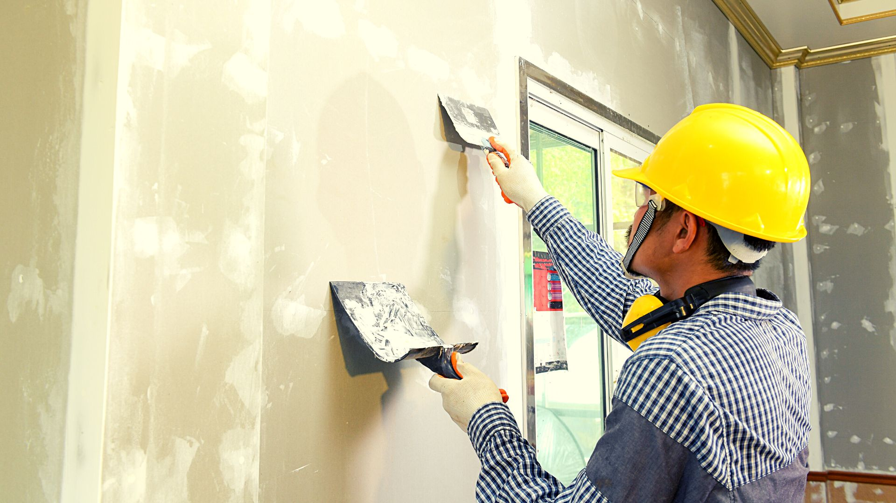
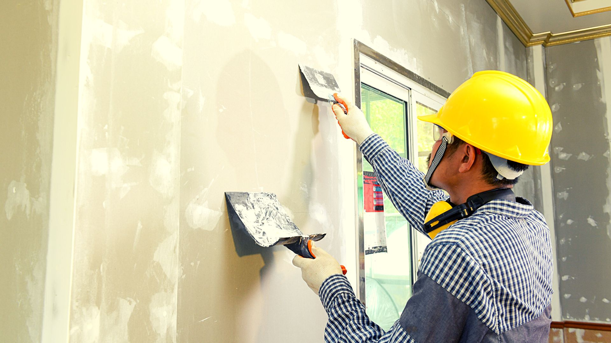

Services
 

Drywall Repair
Drywall repair is a common home maintenance task that involves fixing damage to the interior sheetrock wall repair or ceilings of a building. This type of repair is necessary when the drywall, also known as gypsum board or wallboard, becomes damaged due to various reasons such as impact, moisture, or age. The process of wallboard repair typically involves several steps. First, the damaged area is assessed to determine the extent of the drywall repair needed. This may include fixing holes, cracks, or dents in the drywall surface. Next, any loose or damaged drywall material is removed, and the area is cleaned to ensure proper adhesion of the drywall repair materials. Depending on the size and severity of the damage, different drywall repair techniques may be employed. Small holes or cracks can often be filled with spackling or joint compound, smoothed out, and sanded to create a seamless surface. Larger holes may require the use of a drywall patch or replacement piece, which is secured in place with joint compound and drywall tape. After the wallboard repair is complete, the surface is sanded again to achieve a smooth finish, and then it can be primed and painted to match the surrounding area that can help fix sheetrock. Properly repairing drywall not only restores the aesthetic appearance of the wall or ceiling but also helps maintain the structural integrity of the building. While minor drywall repairs can be tackled by homeowners with some DIY skills, more extensive damage may require professional drywall fixer assistance to fix sheetrock and ensure a durable and long-lasting fix. Hiring a professional drywall fixer can save time and ensure the drywall repair is done correctly, providing peace of mind for homeowners.
(Click here for costs)
Wallboard Repair
(Click here for Wallboard repair costs)
Wallboard repair, commonly known as drywall, is a straightforward yet crucial task to fix sheetrock and maintain the integrity and aesthetics of your home or workspace. Wallboard damage can occur due to various reasons, including impact, water leakage, or simple wear and tear over time. Here's a concise guide for effective wallboard repair:
1. **Assessment**: Begin by assessing the extent of the damage. Is it a small hole, a crack, or a larger section that needs wallboard repair or sheetrock wall repair? Understanding the scope will help determine the materials and techniques required for the wallboard repair.
2. **Gather Materials**: You'll typically need drywall compound (also called mud), a putty knife, sandpaper, a utility knife, and a piece of replacement wallboard repair if the damage is extensive.
3. **Preparation**: Clean the damaged area to remove any loose debris or dust. If the damage is a hole, square off the edges with a utility knife to create a clean, even shape to help fix sheetrock .
4. **Patch the Hole**: Apply a thin layer of drywall compound and sheetrock wall repair over the damaged area using a putty knife. Press a piece of drywall tape into the compound to reinforce the drywall repair. Apply a second layer of compound over the tape, feathering the edges to blend with the surrounding sheetrock wall repair.
5. **Finishing Touches**: Once the compound is dry, typically overnight, sand the area smooth with fine-grit sandpaper. Repeat the process if necessary until the drywall repair is flush with the sheetrock wall repair surface.
6. **Painting**: Finally, paint over the repaired area to match the surrounding sheetrock wall repair, ensuring a seamless finish that can help fix sheetrock damage.
By following these steps, you can effectively help wallboard repair or sheetrock wall repair damage and restore the appearance of your sheetrock wall repair with minimal hassle.
(Click here for Wallboard repair costs)
Popcorn Ceiling (Cottage Cheese ceiling,Bubble Ceiling)
(Click here for popcorn ceiling,cottage cheese ceiling or bubble ceiling costs)
Repairing a popcorn ceiling,cottage cheese ceiling or bubble ceiling , also known as acoustic ceiling texture, can be a manageable project with the right tools and techniques could fix sheetrock. popcorn ceiling,cottage cheese ceiling or bubble ceilings were popular in past decades for their ability to hide imperfections and dampen sound, but they can become damaged or outdated over time. Here's a concise guide on how to repair a popcorn ceiling,cottage cheese ceiling or bubble ceiling:
1. **Preparation**: Before beginning any repairs, ensure the area is properly prepared. This includes covering walls and furniture with plastic sheeting to protect them from dust and debris.
2. **Safety**: It's essential to wear protective gear such as goggles, a dust mask, and gloves to shield yourself from dust particles and potential irritants.
3. **Assessment**: Inspect the popcorn ceiling,cottage cheese ceiling or bubble ceiling to determine the extent of the damage. Common issues include water stains, cracks, or areas where the texture has come loose.
4. **Repairing Damage**: For small cracks or holes, use a putty knife to apply joint compound or spackle. Smooth it over the damaged area and let it dry completely fix sheetrock before sanding it smooth.
5. **Reattaching Loose Texture**: If sections of the popcorn ceiling,cottage cheese ceiling or bubble ceiling texture have come loose, you can reattach them using a spray-on adhesive specifically designed for popcorn ceiling,cottage cheese ceiling or bubble ceilings. Simply spray the adhesive onto the back of the texture and press it firmly into place.
6. **Matching Texture**: If the repair to fix sheetrockrequires replacing a larger section of the popcorn texture, you'll need to match the existing texture. You can achieve this by using a pre-mixed popcorn ceiling,cottage cheese ceiling or bubble ceiling texture available in aerosol cans or by applying a thinned-down mixture of joint compound with a texture sprayer.
7. **Finishing Touches**: Once the repaired area has dried completely, typically overnight, you can paint over it to match the surrounding ceiling.
By following these steps carefully, you can effectively repair a popcorn ceiling,cottage cheese ceiling or bubble ceiling and restore its appearance without the need for professional drywall fixer assistance. However, if the damage is extensive or if you're unsure about tackling the repair yourself, it's advisable to consult a professional drywall fixer drywall fixer.
(Click here for popcorn ceiling,cottage cheese ceiling or bubble ceiling costs)